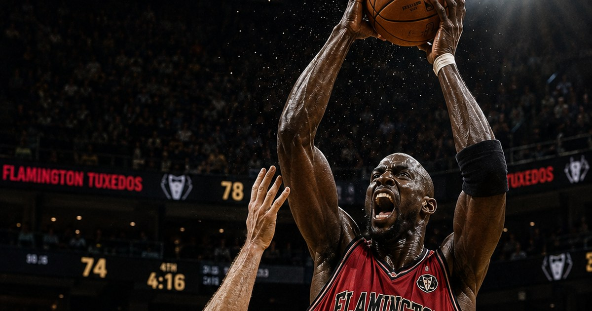
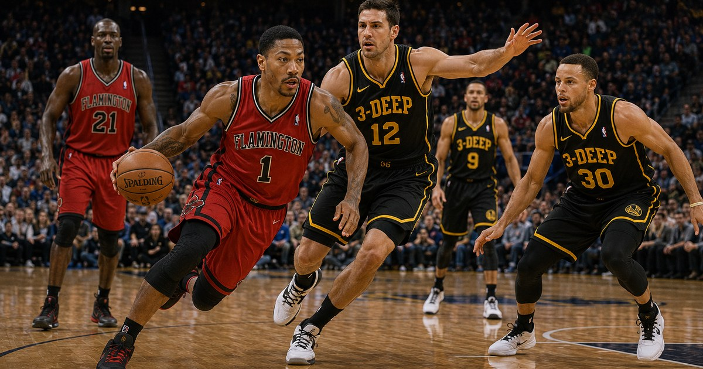

All Stories
Every article from around the league, most recent first.

Opinion
Is it too early to panic for 3-Deep?
A top-three offense and a bottom-of-the-league defense have combined for the league's only winless record.
By Lewis Krauskopf · August 4, 2026

Game of the Week
Five-deep Blankendorf outlasts Oscar's masterpiece
Five players in double figures survive a 25-point, 12-assist night from Robertson in a game that came down to the final possessions.
By Lewis Krauskopf · August 4, 2026

Feature
The long Rose back to redemption
Four straight wins, a 36-point night, and a player the real game moved on from too early finally getting his runway.
By Lewis Krauskopf · August 4, 2026